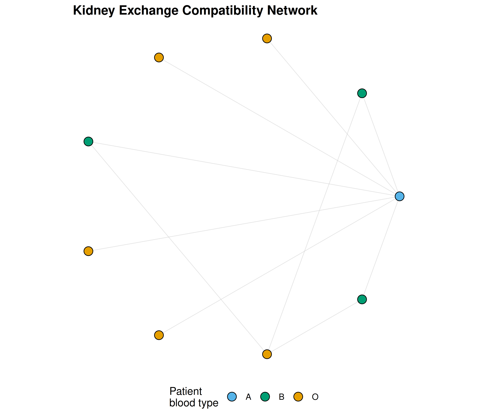
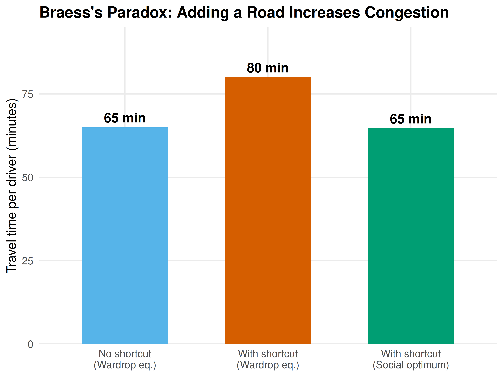

37 Empirical Case Studies
Real-world applications of game theory analyzed with R — spectrum auctions, kidney exchange, and Braess’s paradox in traffic routing.
Learning objectives
- Model an FCC-style spectrum auction as a multi-unit sealed-bid simulation and analyze revenue outcomes.
- Formulate kidney exchange as a matching problem on a compatibility graph and compute maximal matchings.
- Explain Braess’s paradox and compute Wardrop equilibria for simple traffic networks in R.
- Visualize network structures and compare equilibrium outcomes with socially optimal flows.
37.1 Motivation
Game theory is not merely an abstract discipline — it has reshaped multi-billion-dollar markets and saved thousands of lives. The FCC’s spectrum auctions raised over $200 billion by applying auction theory. Kidney exchange programs, designed using matching theory, enable thousands of transplants annually that would otherwise be impossible. And traffic engineers have discovered, counterintuitively, that adding roads can increase total travel time — a phenomenon predicted by game-theoretic models.
This chapter applies computational game theory to three landmark case studies, demonstrating how the tools developed throughout this book operate in practice.
37.2 Theory
37.2.1 Spectrum auctions
The FCC allocates wireless spectrum licenses through simultaneous ascending auctions. Multiple licenses are sold concurrently; bidders submit bids in rounds, prices rise, and bidders can switch across licenses. The design aims to achieve an efficient allocation — licenses go to firms that value them most — while generating revenue for the government.
We simplify this to a multi-unit sealed-bid auction where \(n\) bidders submit bids for \(k\) identical licenses, and the \(k\) highest bidders win at the \((k+1)\)-th highest bid (a Vickrey-style rule that incentivizes truthful bidding).
37.2.2 Kidney exchange
A patient needing a kidney often has a willing but biologically incompatible donor. Kidney exchange matches incompatible patient-donor pairs: if Patient A’s donor is compatible with Patient B, and Patient B’s donor is compatible with Patient A, a pairwise exchange can save both lives.
The problem maps to a directed graph where nodes are patient-donor pairs and edges indicate compatibility. A matching is a set of disjoint cycles (typically of length 2 or 3) that maximizes the number of transplants. This is equivalent to a maximum weight matching problem.
37.2.3 Braess’s paradox
Definition: Braess’s Paradox
Braess’s paradox occurs when adding a new road to a traffic network increases the total travel time for all users at the Wardrop equilibrium.
In a Wardrop equilibrium (the traffic analog of Nash equilibrium), every used route has equal travel time, and no driver can reduce their travel time by unilaterally switching routes. The paradox arises because selfish routing ignores congestion externalities — each driver’s route choice increases travel times for others.
Consider a 4-node network from origin \(O\) to destination \(D\) with two intermediate nodes \(A\) and \(B\):
- Route 1: \(O \to A \to D\) with costs \(c_{OA}(x) = x/100\) and \(c_{AD} = 45\).
- Route 2: \(O \to B \to D\) with costs \(c_{OB} = 45\) and \(c_{BD}(x) = x/100\).
With 4,000 drivers, the Wardrop equilibrium splits traffic equally: 2,000 on each route, total time 65 per driver. Now add a zero-cost road \(A \to B\). A third route \(O \to A \to B \to D\) becomes available, and the new equilibrium has all 4,000 drivers using this route — total time 80. The added road made everyone worse off.
37.3 Implementation in R
37.3.1 Spectrum auction simulation
simulate_spectrum_auction <- function(n_bidders, n_licenses, n_sims = 1000) {
# Each bidder's value drawn from Uniform(0, 100)
# Vickrey rule: k highest bidders win, pay (k+1)-th bid
results <- map_dfr(seq_len(n_sims), function(sim) {
values <- sort(runif(n_bidders, 0, 100), decreasing = TRUE)
winners <- values[seq_len(n_licenses)]
price <- values[n_licenses + 1] # (k+1)-th highest bid
tibble(sim = sim, revenue = n_licenses * price,
avg_winner_surplus = mean(winners - price),
price = price)
})
results
}
auction_results <- simulate_spectrum_auction(n_bidders = 10, n_licenses = 3)
cat(sprintf("Mean revenue (10 bidders, 3 licenses): $%.1f\n",
mean(auction_results$revenue)))#> Mean revenue (10 bidders, 3 licenses): $191.8#> Mean winner surplus: $18.0#> Mean clearing price: $63.937.3.2 Kidney exchange matching
build_compatibility_graph <- function(n_pairs, compatibility_prob = 0.15,
seed = 42) {
set.seed(seed)
# Each pair has a patient blood type and donor blood type
blood_types <- c("O", "A", "B", "AB")
# Simplified compatibility: O donates to all, AB receives from all
can_donate <- function(donor_bt, patient_bt) {
if (donor_bt == "O") return(TRUE)
if (donor_bt == patient_bt) return(TRUE)
if (patient_bt == "AB") return(TRUE)
FALSE
}
pairs <- tibble(
pair_id = seq_len(n_pairs),
patient_bt = sample(blood_types, n_pairs, replace = TRUE,
prob = c(0.44, 0.42, 0.10, 0.04)),
donor_bt = sample(blood_types, n_pairs, replace = TRUE,
prob = c(0.44, 0.42, 0.10, 0.04))
) |>
# Exclude already-compatible pairs (they don't need exchange)
filter(!map2_lgl(donor_bt, patient_bt, can_donate))
n <- nrow(pairs)
# Build adjacency: edge from i to j if i's donor is compatible with j's patient
edges <- expand_grid(from = seq_len(n), to = seq_len(n)) |>
filter(from != to) |>
mutate(
compatible = map2_lgl(from, to, function(i, j) {
can_donate(pairs$donor_bt[i], pairs$patient_bt[j]) &
runif(1) < (1 + compatibility_prob) # crossmatch factor
})
) |>
filter(compatible)
list(pairs = pairs, edges = edges, n = n)
}
find_pairwise_matches <- function(graph) {
# Greedy maximal matching on pairwise exchanges (2-cycles)
edges <- graph$edges
n <- graph$n
matched <- rep(FALSE, n)
matches <- list()
# Find all 2-cycles: i->j and j->i both exist
for (idx in seq_len(nrow(edges))) {
i <- edges$from[idx]
j <- edges$to[idx]
if (matched[i] || matched[j]) next
# Check reverse edge exists
reverse <- edges |> filter(from == j, to == i)
if (nrow(reverse) > 0) {
matched[i] <- TRUE
matched[j] <- TRUE
matches <- c(matches, list(c(i, j)))
}
}
list(matches = matches, n_matched = sum(matched), n_total = n)
}
graph <- build_compatibility_graph(n_pairs = 50)
matching <- find_pairwise_matches(graph)
cat(sprintf("Pairs in pool: %d\n", matching$n_total))#> Pairs in pool: 9
cat(sprintf("Pairwise exchanges found: %d (saving %d patients)\n",
length(matching$matches), matching$n_matched))#> Pairwise exchanges found: 0 (saving 0 patients)37.3.3 Kidney exchange network visualization
# Layout nodes in a circle
n_nodes <- graph$n
angles <- seq(0, 2 * pi, length.out = n_nodes + 1)[-(n_nodes + 1)]
node_data <- graph$pairs |>
mutate(x = cos(angles), y = sin(angles),
node_id = row_number())
# Edge data
edge_data <- graph$edges |>
left_join(node_data |> select(node_id, x, y), by = c("from" = "node_id")) |>
rename(x_from = x, y_from = y) |>
left_join(node_data |> select(node_id, x, y), by = c("to" = "node_id")) |>
rename(x_to = x, y_to = y)
# Matched edges
matched_pairs <- do.call(rbind, matching$matches)
if (!is.null(matched_pairs)) {
matched_edge_data <- map_dfr(seq_len(nrow(matched_pairs)), function(r) {
i <- matched_pairs[r, 1]
j <- matched_pairs[r, 2]
bind_rows(
tibble(x_from = node_data$x[i], y_from = node_data$y[i],
x_to = node_data$x[j], y_to = node_data$y[j]),
tibble(x_from = node_data$x[j], y_from = node_data$y[j],
x_to = node_data$x[i], y_to = node_data$y[i])
)
})
} else {
matched_edge_data <- tibble(x_from = numeric(), y_from = numeric(),
x_to = numeric(), y_to = numeric())
}
# Colour by blood type
bt_colours <- c("O" = okabe_ito[1], "A" = okabe_ito[2],
"B" = okabe_ito[3], "AB" = okabe_ito[5])
p_kidney <- ggplot() +
geom_segment(data = edge_data, aes(x = x_from, y = y_from,
xend = x_to, yend = y_to),
colour = "grey80", linewidth = 0.3, alpha = 0.5) +
geom_segment(data = matched_edge_data,
aes(x = x_from, y = y_from, xend = x_to, yend = y_to),
colour = okabe_ito[6], linewidth = 1.2) +
geom_point(data = node_data, aes(x = x, y = y, fill = patient_bt),
shape = 21, size = 4, colour = "black", stroke = 0.5) +
scale_fill_manual(values = bt_colours, name = "Patient\nblood type") +
coord_equal() +
theme_publication() +
theme(axis.text = element_blank(), axis.title = element_blank(),
axis.ticks = element_blank(), panel.grid = element_blank()) +
labs(title = "Kidney Exchange Compatibility Network")
p_kidney
Figure 37.1: Kidney exchange compatibility network. Nodes represent incompatible patient-donor pairs (coloured by patient blood type). Edges show potential donations. Highlighted thick edges are matched pairwise exchanges.
save_pub_fig(p_kidney, "kidney-exchange-network", width = 7, height = 6)37.3.4 Braess’s paradox
braess_network <- function(n_drivers = 4000, has_shortcut = FALSE) {
# Routes in 4-node network: O -> A -> D, O -> B -> D, and optionally O -> A -> B -> D
# Cost functions: c_OA(x) = x/100, c_AD = 45, c_OB = 45, c_BD(x) = x/100
# Shortcut A -> B costs 0
if (!has_shortcut) {
# Without shortcut: two routes, symmetric => equilibrium splits equally
x <- n_drivers / 2
time_r1 <- x / 100 + 45 # O->A->D
time_r2 <- 45 + x / 100 # O->B->D
return(list(routes = c("O-A-D", "O-B-D"),
flows = c(x, x),
times = c(time_r1, time_r2),
total_time = n_drivers * time_r1))
}
# With shortcut: Wardrop equilibrium
# Route 3: O->A->B->D has cost x_OA/100 + 0 + x_BD/100
# At equilibrium, all used routes have equal cost
# Solving: all drivers use O->A->B->D, each segment carries 4000
# Time = 4000/100 + 0 + 4000/100 = 80
x_all <- n_drivers
time_shortcut <- x_all / 100 + 0 + x_all / 100
return(list(routes = c("O-A-D", "O-B-D", "O-A-B-D"),
flows = c(0, 0, x_all),
times = c(NA, NA, time_shortcut),
total_time = n_drivers * time_shortcut))
}
# Social optimum with shortcut: solve by splitting traffic
social_optimum_shortcut <- function(n_drivers = 4000) {
# Optimize over flow split: x on O-A-D, y on O-B-D, z on O-A-B-D
# x + y + z = n_drivers
# Minimize total travel time
best <- list(total = Inf)
for (x in seq(0, n_drivers, by = 100)) {
for (y in seq(0, n_drivers - x, by = 100)) {
z <- n_drivers - x - y
flow_OA <- x + z
flow_BD <- y + z
time_r1 <- flow_OA / 100 + 45
time_r2 <- 45 + flow_BD / 100
time_r3 <- flow_OA / 100 + 0 + flow_BD / 100
total <- x * time_r1 + y * time_r2 + z * time_r3
if (total < best$total) {
best <- list(x = x, y = y, z = z, total = total,
times = c(time_r1, time_r2, time_r3))
}
}
}
best
}
no_shortcut <- braess_network(4000, has_shortcut = FALSE)
with_shortcut <- braess_network(4000, has_shortcut = TRUE)
social_opt <- social_optimum_shortcut(4000)
cat("=== Without shortcut ===\n")#> === Without shortcut ===
cat(sprintf(" Each route: %d drivers, travel time: %.0f\n",
no_shortcut$flows[1], no_shortcut$times[1]))#> Each route: 2000 drivers, travel time: 65#> Total travel time: 260,000
cat("\n=== With shortcut (Wardrop equilibrium) ===\n")#>
#> === With shortcut (Wardrop equilibrium) ===
cat(sprintf(" All %d drivers use O-A-B-D, travel time: %.0f\n",
with_shortcut$flows[3], with_shortcut$times[3]))#> All 4000 drivers use O-A-B-D, travel time: 80#> Total travel time: 320,000
cat("\n=== With shortcut (social optimum) ===\n")#>
#> === With shortcut (social optimum) ===#> O-A-D: 1700, O-B-D: 1700, O-A-B-D: 600#> Total travel time: 258,800
cat(sprintf("\nBraess's paradox: adding the shortcut increased travel time by %.0f%%\n",
100 * (with_shortcut$total_time - no_shortcut$total_time) /
no_shortcut$total_time))#>
#> Braess's paradox: adding the shortcut increased travel time by 23%37.3.5 Braess’s paradox visualization
braess_data <- tibble(
scenario = factor(c("No shortcut\n(Wardrop eq.)",
"With shortcut\n(Wardrop eq.)",
"With shortcut\n(Social optimum)"),
levels = c("No shortcut\n(Wardrop eq.)",
"With shortcut\n(Wardrop eq.)",
"With shortcut\n(Social optimum)")),
total_time = c(no_shortcut$total_time,
with_shortcut$total_time,
social_opt$total),
per_driver = total_time / 4000
)
p_braess <- ggplot(braess_data, aes(x = scenario, y = per_driver,
fill = scenario)) +
geom_col(width = 0.6, show.legend = FALSE) +
geom_text(aes(label = sprintf("%.0f min", per_driver)),
vjust = -0.5, size = 4, fontface = "bold") +
scale_fill_manual(values = okabe_ito[c(2, 6, 3)]) +
scale_y_continuous(name = "Travel time per driver (minutes)",
limits = c(0, 95), expand = c(0, 0)) +
scale_x_discrete(name = NULL) +
theme_publication() +
labs(title = "Braess's Paradox: Adding a Road Increases Congestion")
p_braess
Figure 37.2: Total travel time in the 4-node network under three scenarios. Adding a shortcut road increases total travel time at the selfish (Wardrop) equilibrium compared to the original network — Braess’s paradox. A social planner can do better by controlling route assignments.
save_pub_fig(p_braess, "braess-paradox", width = 6, height = 4.5)37.4 Worked example
37.4.1 Braess’s paradox with a 4-node network
Consider 4,000 commuters traveling from \(O\) to \(D\) through nodes \(A\) and \(B\). Edge costs: \(c_{OA}(x) = x/100\), \(c_{AD} = 45\), \(c_{OB} = 45\), \(c_{BD}(x) = x/100\).
# Step 1: Without shortcut — symmetric equilibrium splits traffic equally
cat("Without shortcut: 2000 on each route, time = 2000/100 + 45 = 65 min\n")#> Without shortcut: 2000 on each route, time = 2000/100 + 45 = 65 min
# Step 2: Add shortcut A->B (cost 0). New route O->A->B->D dominates.
cat("With shortcut: all 4000 use O-A-B-D, time = 40 + 0 + 40 = 80 min\n")#> With shortcut: all 4000 use O-A-B-D, time = 40 + 0 + 40 = 80 min#> Increase: 65 -> 80 minutes (+23.1%)
# Step 3: Social optimum
cat(sprintf("\nSocial optimum: O-A-D=%d, O-B-D=%d, O-A-B-D=%d\n",
social_opt$x, social_opt$y, social_opt$z))#>
#> Social optimum: O-A-D=1700, O-B-D=1700, O-A-B-D=600#> Social optimum time: 65 min/driver
cat(sprintf("Price of anarchy = %.0f / %.0f = %.2f\n",
with_shortcut$total_time, social_opt$total,
with_shortcut$total_time / social_opt$total))#> Price of anarchy = 320000 / 258800 = 1.24The gap between the Wardrop equilibrium and the social optimum is the price of anarchy. Cities can close this gap using congestion pricing, or by removing the paradox-inducing road – as Seoul did when it demolished the Cheonggyecheon Expressway in 2003 and traffic improved.
37.5 Extensions
- Combinatorial auctions extend spectrum auctions to bundled items, requiring more sophisticated bidding languages and winner-determination algorithms.
- Kidney exchange chains initiated by altruistic donors allow longer exchange cycles, dramatically increasing the number of feasible transplants. See Roth & Sotomayor (1992) for the foundational design.
- Algorithmic game theory provides bounds on the price of anarchy for general network routing games — see Roughgarden & Tardos (2002) for the definitive treatment.
- Mechanism design (33) provides the theoretical foundation for designing auctions and matching markets that achieve desired social outcomes.
Exercises
Auction revenue and competition. Using
simulate_spectrum_auction(), plot mean revenue as a function of the number of bidders (from 5 to 30) for \(k = 3\) licenses. How does revenue scale? Derive the expected revenue analytically for the Vickrey auction with uniform valuations and compare.Kidney exchange pool size. Run
build_compatibility_graph()andfind_pairwise_matches()for pool sizes of 20, 50, 100, and 200 pairs. Plot the fraction of pairs matched as a function of pool size. Explain why larger pools yield disproportionately more matches (the “thick market” effect).Braess with tolls. Suppose a social planner can impose a toll \(\tau\) on the shortcut road \(A \to B\). Find the value of \(\tau\) that makes the Wardrop equilibrium coincide with the social optimum (i.e., the Pigouvian toll). Implement the computation in R and verify that the resulting travel times equal the social optimum from the worked example.
Solutions appear in D.